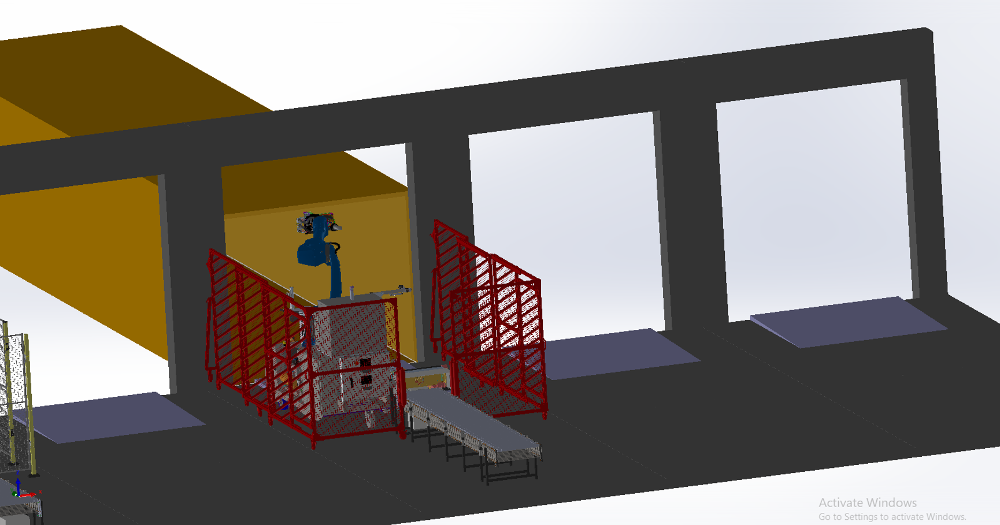
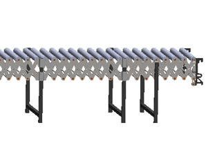
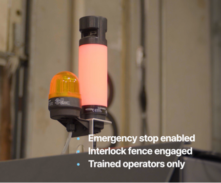
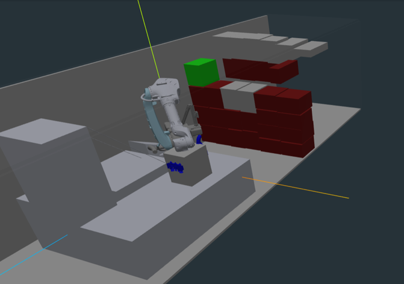

The Duck Camp
Training Program for Level I Duck Operators. Learn to safely and effectively operate the Contoro Dock Duck — our Autonomous Trailer Unloading Robot.
Contoro at a Glance
Our Technology
This is our Autonomous Trailer Unloading Robot — also known as the Dock Duck. It automates one of the most physically demanding tasks in warehouse logistics.

What Do We Do?
We automate offloading floor-loaded trailers. The Duck enters the container, picks up boxes one at a time, and places them onto the conveyor system for palletization.


Why This Matters
Reduces risk of injury for associates and allows them to work on safer tasks.

Why This Matters
Keeps associates inside of the warehouse and out of extremely hot or cold containers.

What Does Automated Trailer Unloading Look Like?
Operating Limits

| Parameter | Specification |
|---|---|
| Box Size (each side) | 8 in — 30 in |
| Box Weight | ≤ 65 lb |
Trailers & Containers
In Scope: Floor-loaded trailers with standard cardboard boxes stacked inside.
Out of Scope: Palletized loads, covered sheets, boxes under 8".
Out of Scope

In Scope

Duck System Architecture
System Components Overview
The Duck system consists of several key components that work together: the Duck robot itself, a safety fence, a safety cart, conveyors, a ramp, and the container at the dock.

Duck / Unloading Robot
The core robot system with KUKA robotic arm, gripper, conveyors, and drive system — all on a mobile platform.

Safety Fence
Interlock safety fence surrounds the operating area to prevent unauthorized access during operation.

Safety Cart
The operator's control station with monitors, E-stop, start button, and laptop for the Cloud UI.

Real-Life Unloading Scene
See the full system in action at a warehouse dock — including the Duck, conveyors, safety cart, and palletizer.

How Does the Box Move from Arm to Pallet?
After the gripper picks up a box from the container wall:
Flat Conveyor
Box lands on the flat conveyor built into the Duck
Sloped Conveyor
Box moves to the sloped (powered) conveyor
Flex Conveyor
Box moves to the flex (skate) conveyor to finally get palletized
Gripper / End Effector
The gripper uses suction cups to pick up boxes from the container wall. It adapts to different box sizes and positions.
KUKA Robotic Arm
A powerful industrial KUKA robotic arm provides the reach and force needed to grab boxes from anywhere inside the container.

Flex (Skate) Conveyor
The expandable skate conveyor extends from the Duck to the palletization area, transporting boxes out of the container.

Knowledge Check — Modules 1 & 2
Test your understanding of the Duck system
Q1. Can we unload a box with dimensions: 4" x 20" x 15"?
Q2. What is the maximum box weight the Duck can handle?
Q3. Which type of container is OUT of scope for the Duck?
Q4. What is the correct order of box movement after the arm picks it up?
Checkpoint
You've completed Modules 1 & 2 — you now understand what the Duck does and how the system is built.
Safety & Risk Awareness
Why Safety Matters
The Duck system includes powerful industrial equipment. Key safety concerns:
- High Voltage — The system operates at 480V which can be fatal
- Heavy Moving Parts — Conveyors and drive mechanisms can cause crush injuries
- Powerful Robotic Arm — The KUKA arm can move suddenly and with great force

Only Trained & Authorized Operators
Only trained and authorized individuals may operate the robot. This training course is a mandatory requirement before you can operate the Duck.
Things to Pay Attention To
- Status Indicator Light — Always check the light color before approaching
- KUKA Robotic Arm — Can move suddenly with force
- High Voltage — Never open electrical panels
- Warehouse Machinery — Be aware of forklifts and other equipment
- Robot Emergency Stops — Know where all 6 E-stops are located
The Status Indicator Light
The status indicator light on the Duck tells you the current state of the robot. Always check it before approaching.

KUKA Robotic Arm Safety
- Can move suddenly with force
- Standing next to a live robot exposes you to impact risk
- A collision can cause serious body injury

High Voltage
- 480V can be fatal
- Do not open panels
- Do not touch exposed wires
- Escalate immediately if you see damage

The 6 E-Stops
There are 6 emergency stop buttons located around the Duck system. Know where they all are — in an emergency, press the nearest one immediately.

Container Unloading Situations
Be prepared for these potential incidents during unloading:
- Robot Arm crashes into the wall — Press E-Stop immediately
- Robot stops unloading / Gets stuck — Report via UI, contact Contoro staff
- Someone entering the container — Press E-Stop immediately. No one should enter while robot is active
- Unexpected movement — Press E-Stop immediately
Knowledge Check — Safety
Test your safety knowledge
Q1. During unloading, the robot crashes into the wall. What is the first thing you would do?
Q2. What does Red Mode indicate?
Q3. How many E-Stop buttons are there on the Duck system?
Q4. What voltage does the Duck system operate at?
Live Exercise I: Meet the Duck!
Time for a hands-on introduction. Your instructor will walk you through the physical Duck system, point out all safety features, E-stops, and components you've learned about.
Operation Modes & Behaviors
Robot Status Modes
The Duck has four operating states, indicated by the Status Indicator Light color:
Red Mode = E-Stop
- Robot cannot move
- It IS safe to approach the robot
- E-Stop is engaged
Blue Mode = Reset
- Robot is requesting reset
- System cannot move
- Can change to Green/Yellow if reset button is pressed
Yellow Mode = Manual
- Robot is drivable with Xbox Controller
- KUKA arm can be moved manually
- Safety Cart cannot control robot
Green Mode = Ready / Active
- It is NOT safe to approach the robot
- Robot arm is able to move
- Robot is ready to unload
Manual Driving
In Yellow (Manual) mode, the Duck can be driven using an Xbox Controller. This is used to move the Duck from storage to the container and back.

Xbox Controller — Used in Yellow State (Manual)
Knowledge Check — Operation Modes
Test your knowledge of robot states
Q1. Manual driving is used to:
Q2. In which mode is it safe to approach the robot?
Q3. What does Green Mode mean?
Setup & Teardown
Setup Procedure
Before unloading, you must set up the following components in order:
Safety Cart
Position the safety cart at the designated operator station with clear view of the dock
Robot / Duck
Drive the Duck (in Yellow/Manual mode) to the container opening using the Xbox controller
Conveyors
Set up and connect the powered and flex conveyors from the Duck to the palletization area
Safety Fence
Deploy the safety fence around the operating area and ensure all interlocks are engaged
Teardown Procedure
After the container is fully unloaded, tear down in reverse order:
Safety Fence
Retract and stow the safety fence
Conveyors
Disconnect and collapse the conveyors
Robot / Duck
Drive the Duck back to storage (Yellow/Manual mode)
Safety Cart
Return the safety cart to its storage position
Live Exercise II: Practice Setup & Teardown!
Practice the full setup and teardown procedure with your instructor. You'll physically position all components and verify safety interlocks.
Operator User Interface (Cloud UI)
UI Overview
The Cloud UI is your primary interface for monitoring and controlling the Duck during operation. It runs in a web browser on the Safety Cart laptop.

UI Tabs
The interface has five main tabs:
| Tab | Purpose |
|---|---|
| Controls | Configure unloading settings — robot speed, box drop-off height, and start/pause unloading |
| Health | Monitor hardware, software, sensors, and robot arm messages |
| Portal | 3D visualization of the robot and container — see what the robot "sees" |
| Incidents | Report and review incidents during operation |
| Maintenance | System maintenance information |
Controls Tab
From the Controls tab you can:
- Assign a container/facility
- Set robot speed (5%–100%)
- Set box drop-off height (10cm–25cm)
- Start and pause unloading

Health Tab
Monitor system health including:
- Hardware: CPU, GPU, memory usage
- Sensors: cameras, lidars status
- Software versions and updates
- Robot arm messages and warnings

Portal Tab
3D visualization showing the robot and container in real-time. See the box wall, robot position, and current operation.

Video Footage
Live camera feeds from the Duck's onboard cameras, letting you see what's happening inside the container.

Incident Reporting
If an incident occurs during operation, use the Incident Report form in the UI:
Choose Tag
Select the type of incident or event
Add Notes
Write a few notes to describe the event
Click Report
Submit the incident report
Operating the Duck
Full Operation Workflow
Follow these steps for a complete unloading operation:
Setup
Position Safety Cart, drive Duck to container, set up conveyors, deploy safety fence (as covered in Module 5)
Assign Container in UI
Step 1: Choose the Facility (e.g., "States Logistics 543 Dolly")
Step 2: Choose Container ID (e.g., "MSDU73378779")
You can start unloading from the UI once assigned
Start the Robot
Click the Green Start Button on the Safety Cart. The robot will begin unloading automatically.
During Unloading — Monitor & Respond
Pause: You can stop the robot at any time from the UI
Reset: If robot enters Blue State, press Reset on the Safety Cart
E-Stop: Press immediately for: crashes, incidents, or anyone entering the container
Unloading Finished
The robot will automatically detect when the container is empty and stop. The UI will show completion status.
Teardown
Reverse the setup procedure: retract fence, collapse conveyors, drive Duck to storage, return safety cart
When to Press E-Stop During Unloading
- Crash — Robot arm crashes into container wall or structure
- Incident — Any unexpected behavior or equipment malfunction
- Entering the container — If anyone enters or attempts to enter the container while the robot is active
After pressing E-Stop: Fill out the Incident Report form in the UI (choose tag, add notes, click Report).
Knowledge Check — Modules 5–7
Test your operational knowledge
Q1. What is the first component to set up before unloading?
Q2. After assigning a container in the UI, how do you start the robot?
Q3. When the robot enters Blue State during unloading, what should you do?
Q4. How does the robot know the container is fully unloaded?
Q5. After pressing E-Stop due to an incident, what should you do next?
Live Exercise III: Practice Operating the Duck
Complete the full operation workflow under instructor supervision: setup, assign container, start unloading, monitor operation, handle scenarios, and teardown.
Congratulations!
You've successfully completed your Level I Training Course: Basic Operator. You are now prepared to operate the Contoro Dock Duck under supervision.